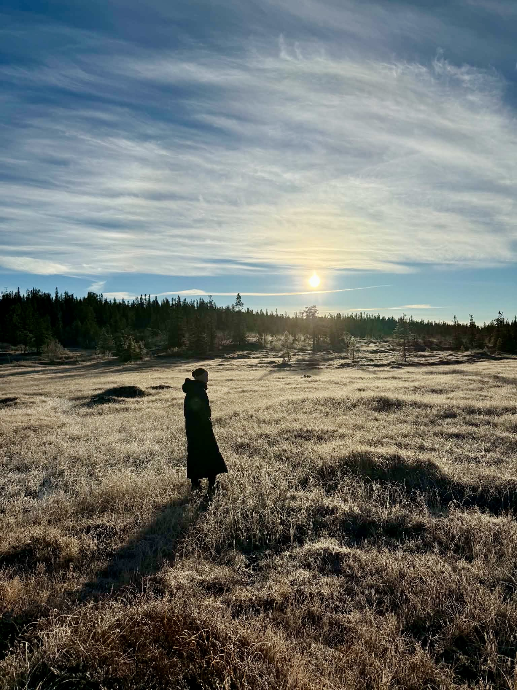
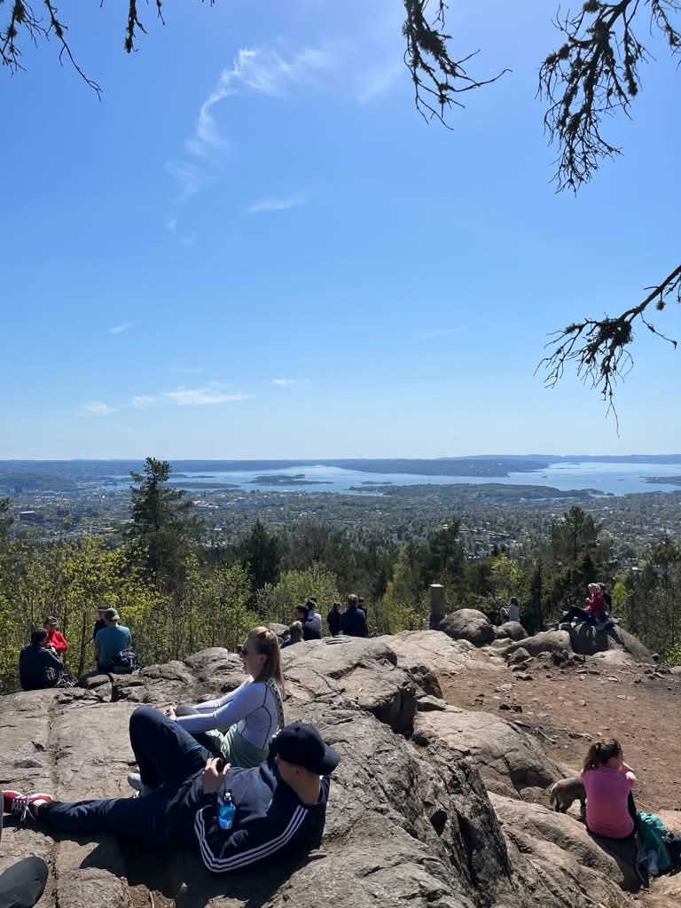
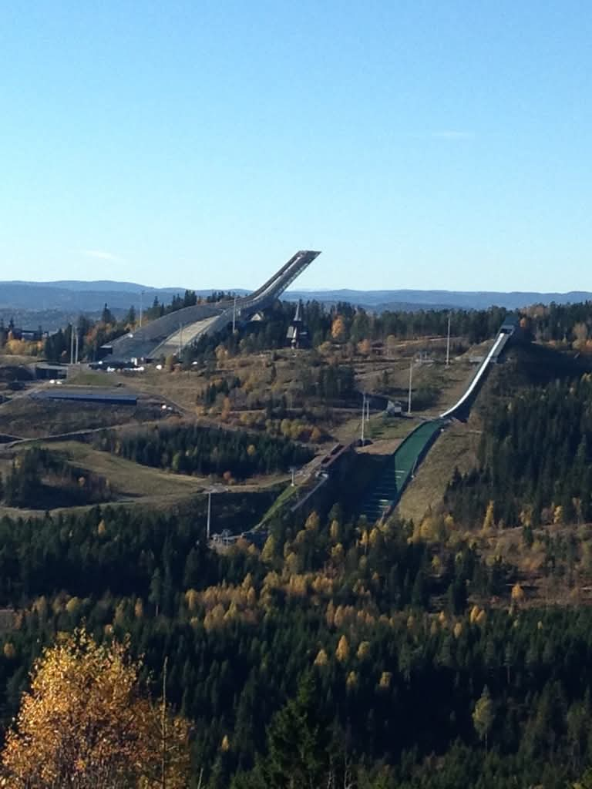
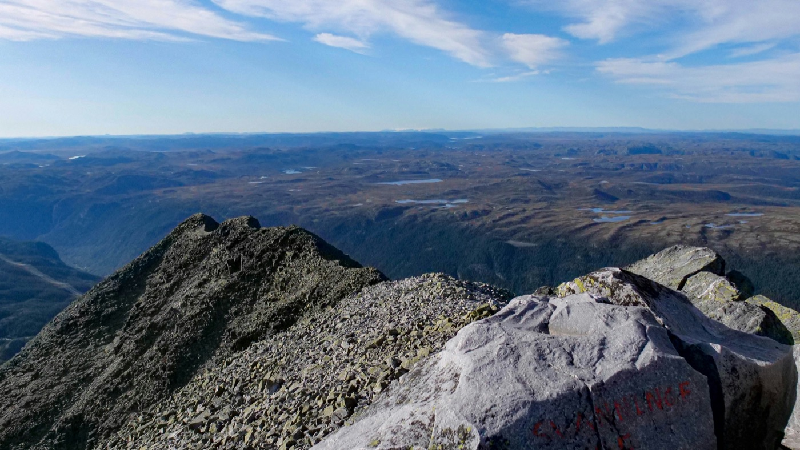
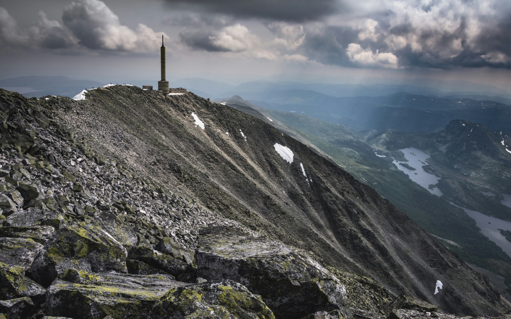
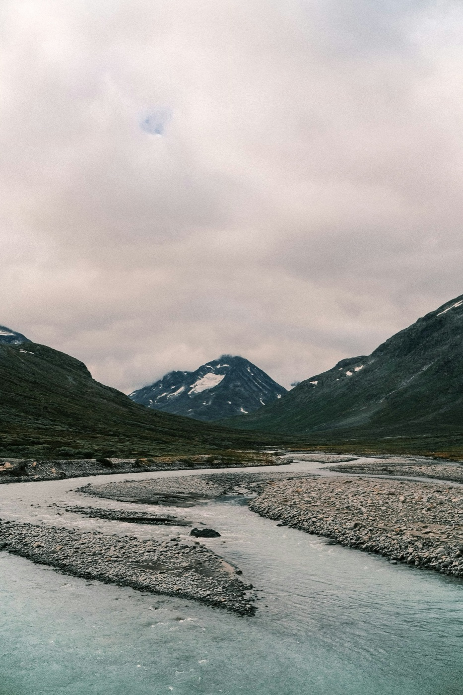
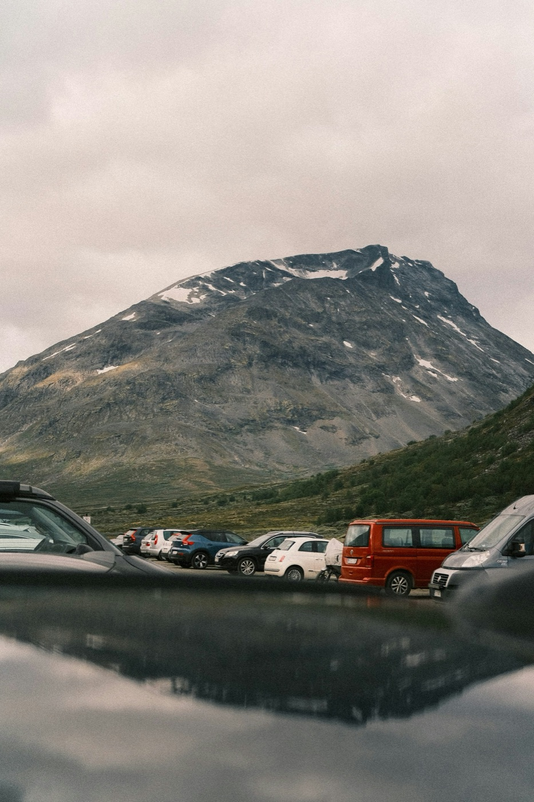

Local
Local
Vettakollen Viewpoint
Oslo's classic forest summit. A short drive from the city leads to Nordmarka, where the trail winds through birch and pine to sweeping views over Oslo and the fjord.

Private guided day trips from Oslo to Norway's greatest mountains. Hotel pickup, all driving, and a guide by your side — all from your hotel door.




Private guided day trips from Oslo to Norway's most spectacular mountains — your guide handles everything, you experience the mountain. From a local forest summit to Galdhøpiggen, the highest peak in all of Scandinavia.
All trips depart from your Oslo hotel. We drive — you hike. Up to 4 guests per trip.
Local
Oslo's classic forest summit. A short drive from the city leads to Nordmarka, where the trail winds through birch and pine to sweeping views over Oslo and the fjord.
 Mountain
Mountain
Norway's most spectacular viewpoint at 1,883m. On a clear day you can see one sixth of Norway from the summit. We drive you there from Oslo and back — same day.
Mountain
The highest peak in Norway and all of Scandinavia at 2,469m. Norway's highest peak — pickup at 05:00, back in Oslo the same night.
Not a day trip — a night in the forest, off the trail, with your guide.
 Overnight
Overnight
We hike into the forest in the late afternoon, to a quiet spot your guide knows and most visitors never find. Tents go up, a fire is lit, and dinner is cooked right there as the light turns gold over the trees. You sleep under the stars and wake to coffee and a forest sunrise, before hiking back out and returning to your hotel.
Fill in the form and we'll confirm your booking within 24 hours — including your pickup time, kit list and everything you need for the day.
Vettakollen is one of Oslo's great surprises — a rocky summit just 30 minutes from the city centre that delivers views most visitors never realise exist. We drive you to the trailhead, the forest begins immediately, and the path winds steadily upward through birch and pine to the open rocky plateau at the top.
From the summit, on a clear day, you can see Oslo spread out below, the fjord glittering beyond, and on the clearest days the Swedish border hills on the horizon. The descent takes a different line, threading past hidden forest tarns and through quiet stands of silver birch that glow gold in autumn.
This is the trip that makes people understand why Osloites have such an easy relationship with nature — the wild is genuinely just around the corner.



At 1,883 metres, Gaustatoppen is Norway's most spectacular viewpoint. On a clear day from the summit you can see one sixth of the entire country — a panorama that stretches from the coast to the high mountains in every direction. We drive you there from Oslo and back in a single day.
We pick you up at your hotel in the morning and head southwest into Telemark. The hike begins from Turisthytta at around 900m, climbing steadily through open moorland and rocky ridgeline to the summit plateau. The views open up progressively as you climb — by the time you reach the top, the scale of the Norwegian landscape is simply astonishing.
The descent follows the same route, giving you time to absorb the scenery at your own pace. We're back in Oslo by early evening.


Galdhøpiggen stands at 2,469 metres — the highest point in Norway, in Scandinavia and in all of Northern Europe. This is the flagship trip: a full day out of Oslo to the roof of the continent and back, with your private guide leading you all the way to the top.
We pick you up at 05:00 and drive five hours northwest to Spiterstulen (1,100m), a traditional mountain lodge in Jotunheimen. From there the summer route climbs through dramatic high-alpine terrain — rock, scree and open ridgelines — to the broad summit at 2,469m. On a clear day the view encompasses an enormous sweep of Norway — lakes, ridgelines and valleys in every direction.
Expect to return late — typically after midnight. It's a long day — and an unforgettable one.
We offer three private guided day trips from Oslo: Vettakollen Viewpoint (easy, 30 min drive — NOK 4,000), Gaustatoppen (moderate, 2.5 hrs to Telemark — NOK 10,000), and Galdhøpiggen Summit (challenging, 5 hrs to Norway's highest peak — NOK 18,000). All prices are per group of up to 4 guests, with hotel pickup and all driving included.
No — the whole day is handled for you. We pick you up from your hotel in Oslo, drive you to the trailhead, guide you through the entire route, and drive you home. There's nothing to plan, no car to hire, no Norwegian mountain roads to navigate. You just show up — we take care of everything else.
Fully private. Every trip is exclusively for your group — no shared vans, no group tours, no strangers. The guide, the car and the day are entirely yours. Our standard trips are priced per group of up to 4. Larger groups are welcome — contact us and we'll put together a tailored quote.
It depends on what you're after. For a taste of Norwegian outdoor life close to the city, Vettakollen is a beautiful half-day forest hike just 30 minutes from Oslo. For a dramatic summit with an unforgettable view, Gaustatoppen is the natural choice — a moderate day trip to one of the greatest panoramas in all of Norway. For those seeking the ultimate summit, Galdhøpiggen is the highest point in all of Scandinavia.
It depends on the tour. Vettakollen is a 3.5-hour forest hike suitable for most walkers. Gaustatoppen involves a sustained 980m climb and needs solid walking fitness, but no mountain experience. Galdhøpiggen is a full mountain day — challenging terrain, long hours, and prior hiking experience is recommended. If you're unsure which tour suits your group, just get in touch and we'll help you choose.
Yes — that's exactly what we're here for. Reaching places like Galdhøpiggen from Oslo without a car involves complicated combinations of trains, buses and ferries. With Oslo Hiking Tours, your guide picks you up from your hotel door and handles all the driving. No car hire, no navigation, no logistics.
Oslo's geography is remarkable — within a few hours of the city you can reach some of Norway's greatest mountain destinations. The three we offer cover the full range: Vettakollen (30 min, easy forest hike), Gaustatoppen (2.5 hrs, Norway's most spectacular viewpoint) and Galdhøpiggen (5 hrs, the highest peak in Scandinavia). See our guide to day trips from Oslo for more detail.
It depends on your fitness, experience and how long a day you want. Vettakollen suits most walkers and takes half a day. Gaustatoppen is a full mountain day for fit walkers without needing experience. Galdhøpiggen is a serious mountain day for those with prior hiking experience. Our guide to mountains near Oslo covers each one in detail, or just get in touch and we'll help you choose.
Yes — Overnight in Nordmarka is our forest camping experience. We hike to a secluded spot in the late afternoon, cook dinner over the fire as the sun sets, sleep under the stars, and hike back out the next morning. All equipment is provided.